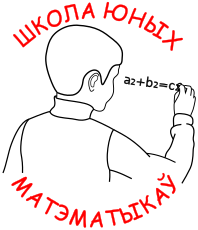

<!doctype html>
<html lang="en">
<meta charset="utf-8">
<meta name="viewport" content="width=device-width, initial-scale=1">
<title>Школа Юных Матэматыкаў</title>
<meta name="description" content="School of Young Mathematicians">
<meta name="author" content="Aliaksei Vaidzelevich">
<link rel="icon" href="favicon.svg" type="image/svg+xml">
<link rel="stylesheet" href="styles.css">

</html>

<body>
    <div class="site">
        <div class="header">
            <div>
                
            </div>
            <h1 style="margin: auto;">Школа Юных Матэматыкаў</h1>
        </div>
        <div style="text-align: justify;text-justify: inter-word;">
            У новым навучальным годзе працягвае працу Школа юных матэматыкаў.
            Заняткі праводзяць супрацоўнікі Інстытута матэматыкі.
            Тэмы заняткаў пашыраюць і паглыбляюць курс школьнай матэматыкі,
            маюць алімпіядны і даследчы характар.<br>
            <b>Увага!</b> Заняткі бясплатныя, аднак, Школа юных матэматыкаў не ставіць перад
            сабой задачу падрыхтоўкі школьнікаў да ЦТ.
        </div>
        <h2>
            Расклад заняткаў (пачынаючы з кастрычніка):
        </h2>
        <ul>
            <li><b>Малодшая група (8, 9 класы):</b> панядзелак, 17:00 - 18:30</li>
            <li><b>Старэйшая група (10, 11 класы):</b> аўторак, 17:00 - 18:30</li>
        </ul>
        <h2>
            Адрас:
        </h2>
        г. Мінск, вул. Сурганава, 11 (Інстытут матэматыкі НАН Беларусі), аўд.&nbsp;52<br>
        <b>Тэлефон:</b> +375 29 353 25 50, Аляксей Сяргеевіч Вайдзелевіч<br>
        <b>Telegram:</b> <a href="https://t.me/symimby">https://t.me/symimby</a>
        <h2>Матэрыялы заняткаў (2022 / 2023):</h2>
        <table style="width:100%">
            <tr>
                <th style="width:50%;"><b>8, 9 класы</b></th>
                <th style="width:50%;"><b>10, 11 класы</b></th>
            </tr>
        </table>
    </div>
</body>